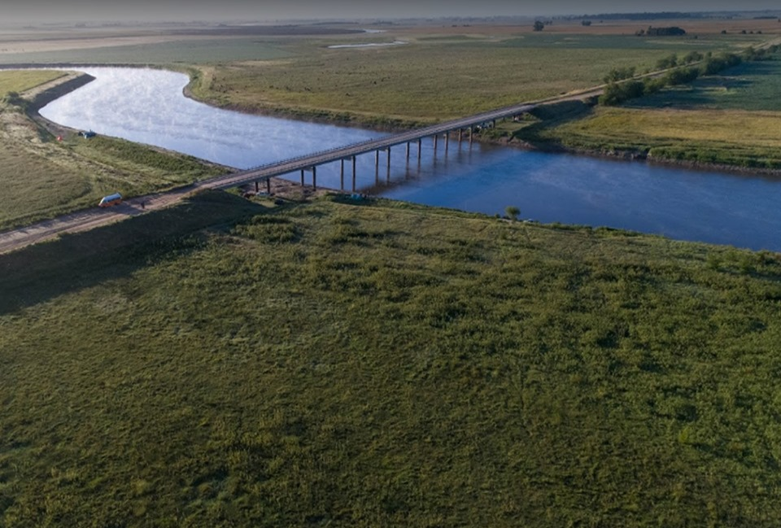

Ruta de pesca


Empezare a contar los lugares que conoci durante estos años. Poniendo que se pesca y como llegar. Tambien pondre lugares que no logre conocer.
General belgrano

General Belgrano es una ciudad de la provincia de Buenos Aires, Argentina. La atraviesan las rutas provinciales RP 41 y la RP 29, a través de esta última se accede a la ciudad de Buenos Aires, que se encuentra a 159 km de distancia.
Lugares para pescar
El primer lugar, se encuentra sobre la ruta 41,ahi podremos llegar con el auto hasta la orilla del rio, tambien podemos recorrerlo caminando por ambos lados. Tenemos el puente que nos sirve de refugio en dias de lluvias como de calor, ya que no encontrarmos arboles en lecho del rio. Se encuentra a 154 km de Capital Federal

Que se pesca
En temporadas podes encontrar
como llegar

El segundo lugar se encuentra dentro del partido de General Belgrano, se llama Villa nueva,ahi podremos llegar con el auto hasta la orilla del rio, tambien podemos recorrerlo caminando por ambos lados. Se encuentra a 151 km de Capital Federal

Que se pesca
En temporadas podes encontrar, aprevechando que podes caminar rio arriba y aprovechar los barrancos.
como llegar
El tercer lugar se encuentra dentro del partido de General Belgrano, se llama puente las gaviotas,aca no tenemos posibilidad de llegar con el auto hasta la orrilla del rio, tambien podemos recorrerlo caminando por ambos lados. Se encuentra a 177 km de Capital Federal

Que se pesca
En temporadas podes encontrar, aprevechando que podes caminar rio arriba y aprovechar los barrancos.
como llegar
Pila Buenos Aires.

Pila es una ciudad situada en el centro este de la provincia de Buenos Aires, Argentina. El Partido de Pila se encuentra ubicado en el centro este de la Provincia de Buenos Aires, a 190 km. Aproximadamente de la Ciudad Autónoma de Buenos Aires. Limita con los partidos de General Belgrano, Chascomús, Castelli, Dolores, General Guido, Ayacucho, Rauch y Las Flores. Se encuentra a unos 193 KM de Capital Federal.
Lugares para pescar
El primer lugar, se encuentra en el partido de pila,ahi podremos llegar con el auto hasta la orilla del rio, tambien podemos recorrerlo caminando por ambos lados. Tenemos el puente que nos sirve de refugio en dias de lluvias como de calor, ya que no encontrarmos arboles en lecho del rio. Se encuentra a 170 km de Capital Federal

Que se pesca
En temporadas podes encontrar, aprevechando que podes caminar rio arriba y aprovechar los barrancos.
como llegar
El segundo lugar, se encuentra en el partido de pila se llama arroyo camaron,ahi podremos llegar con el auto hasta la orilla del rio, tambien podemos recorrerlo caminando por ambos lados. Se encuentra a 214 km de Capital Federal

Que se pesca
En temporadas podes encontrar.
como llegar
El tercer lugar, se encuentra en el partido de pila se llama arroyo San Miguel,ahi podremos llegar con el auto hasta la orilla del rio, tambien podemos recorrerlo caminando por ambos lados. Se encuentra a 202 km de Capital Federal

Que se pesca
En temporadas podes encontrar.
como llegar